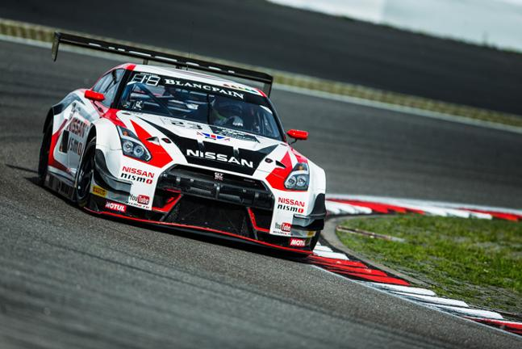

The Nissan GT-R has earned its place as one of the most revered sports cars in the world, with a legacy built on decades of engineering excellence, relentless innovation, and motorsport success. From its early days with the legendary R32 Skyline "Godzilla" to the state-of-the-art R35, the GT-R has continued to evolve, setting new benchmarks in speed, performance, and handling. This car has captured the hearts of enthusiasts worldwide, not only for its raw power but for the advanced technology and driving dynamics that define the GT-R experience.
With its unmistakable design and reputation as a high-performance beast, the Nissan GT-R remains a symbol of cutting-edge automotive technology and racing pedigree. Whether you're admiring its sleek, aerodynamic lines or feeling the thrill of its twin-turbocharged V6 engine on the road, the GT-R is more than just a vehicle—it's a driving experience like no other. It strikes a perfect balance between brute power and refined control, making it a supercar that drivers can truly connect with on every level.
As you explore the different GT-R models, from the historic R32 to the latest R35, you’ll find a car that is both a symbol of speed and a testament to Nissan’s dedication to innovation. Whether you’re customizing your dream GT-R or learning about its rich history, this site offers everything you need to dive deep into the world of Nissan's most iconic sports car.
Don't just take our word for it—experience the legacy of the Nissan GT-R for yourself. Explore the configurator, customize your ideal version, and unleash the power of this incredible machine. Below, you can see an example of the GT-R in action, a true icon of speed and precision.
Ready to start your journey? Begin customizing your Nissan GT-R and make this legend your own!